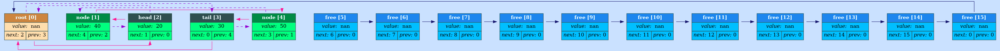
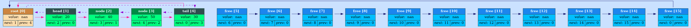

2022-10-28 18:25:12+0300 [Info]: Started logging at 'HTML logs'
2022-10-28 18:25:12+0300 [~trace~]: Dumping list: List not linearized:

2022-10-28 18:25:12+0300 [~trace~]: Performing operation 'linearize(&list)' in 'int main():34', file: /home/meerkat/Documents/programming/compact_list/src/main.cpp
2022-10-28 18:25:12+0300 [~trace~]: State before execution:
2022-10-28 18:25:12+0300 [~trace~]: linearized=0
2022-10-28 18:25:12+0300 [~trace~]: State after execution:
2022-10-28 18:25:12+0300 [~trace~]: linearized=1
2022-10-28 18:25:12+0300 [~trace~]: Dumping list: List linearized:
